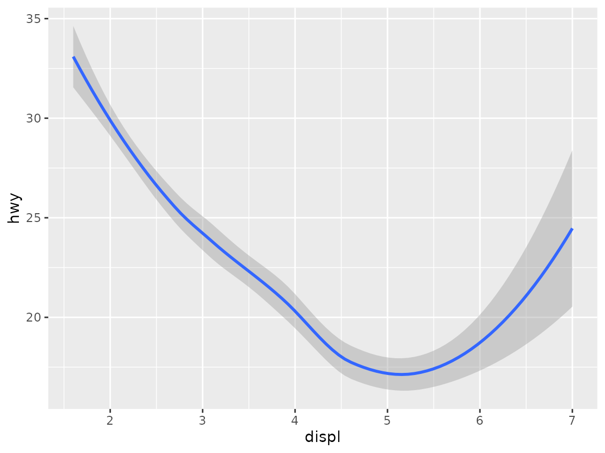
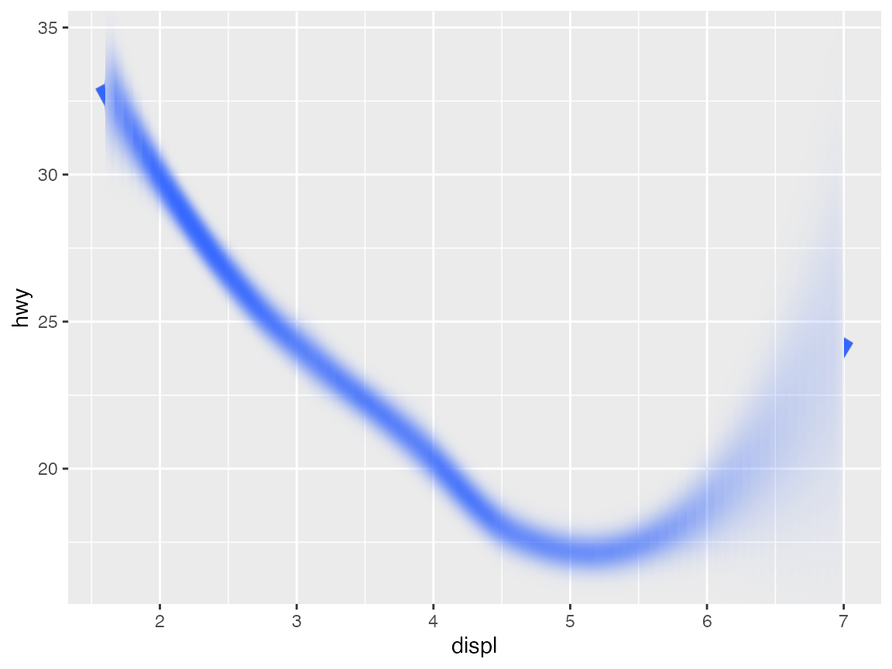

ggfx is designed to work especially well with ggplot2 and its extended ecosystem of extension packages. Any type of layer should (theoretically) support being wrapped by a with_*() filter and just work. There are things that aren’t possible however, such as making the filter responsive to the data in the layer, or making the filter behave differently for different groups in the layer. For this to be possible you’ll need to implement your own geom which uses ggfx. This vignette will show you an example of that.
Note that this vignette assumes familiarity with the ggplot2 extension system. There will not be spend time explaining the ins-and-outs of how a new geom is coded. To read more on how the extension system works, please consult https://ggplot2-book.org/extensions.html
To illustrate how to use ggfx inside a geom, we are going to make an alternative version of geom_smooth(). Instead of showing the confidence interval as a ribbon we will show it as a blur with various sigma depending on the width of the confidence interval. We’ll ignore for now whether this is a sound approach to showing confidence intervals.
ggfx already includes a with_variable_blur() filter which seems perfect for our task. However, we need to make this work for each single fit, and we need the blur amount to be based on some data in the layer. The way we do this is to add the filter to the grobs created by the geom directly in the draw_group() method:
GeomBlurrySmooth <- ggproto('GeomBlurrySmooth', GeomSmooth,
setup_params = function(data, params) {
params$max_range <- max(data$ymax - data$ymin)
params
},
draw_group = function (data, panel_params, coord, max_range, ...) {
# Create a raster object representing the width oof the ribbon
sigma <- ((data$ymax - data$ymin) / max_range)^1.5
sigma_raster <- as.raster(matrix(sigma, nrow = 1))
# Use the annotate_raster geom to convert it to a raster that spans the x-range
# of the line
sigma_grob <- GeomRasterAnn$draw_panel(
data, panel_params, coord,
raster = sigma_raster,
xmin = min(data$x),
xmax = max(data$x),
ymin = -Inf,
ymax = Inf
)
# Convert it to a reference layer
ref_name <- paste0('GeomBlurrySmooth_<', data$group[1], '>')
sigma_grob <- as_reference(sigma_grob, ref_name)
# Figurer out the maximum sigma relative to the y scale
max_sigma <- 0.5 * max_range / diff(panel_params$y$dimension())
# Create a line grob using geom_line
line_grob <- GeomLine$draw_panel(data, panel_params, coord)
# Add variable blur. Turn off blur in the x-direction and use the calulated max sigma
# in the y direction
line_grob <- with_variable_blur(line_grob, ch_red(ref_name), x_scale = 0, y_scale = unit(max_sigma, 'npc'))
# Return the two grobs combined, making sure that the reference grob comes first
grid::gList(
sigma_grob,
line_grob
)
}
)I’ve tried to annotate the code as much as possible. Most of the code pertains to this particular case, so the main takeaways are that you simply figure out the correct parameters for your filter in the geom and then return a filtered grob using these parameters. Another point of note is that you can create reference layers within your geom and use these - the only thing you need to take care of is that the name is unique to the group, and that the reference grob comes before the filtered grob that uses it.
Without further ado, let’s see if it works - let’s start with the regular smooth geom:
ggplot(mpg, aes(displ, hwy)) +
geom_smooth()
#> `geom_smooth()` using method = 'loess' and formula 'y ~ x'
And now for our new version (we are using stat_smooth() because we haven’t bothered creating a constructor). We’ll increase the size of the line because otherwise the blur might make it disappear completely:
ggplot(mpg, aes(displ, hwy)) +
stat_smooth(geom = GeomBlurrySmooth, size = 5, alpha = 1)
#> `geom_smooth()` using method = 'loess' and formula 'y ~ x'
It works! Now, there are certainly room for improvements. The obvious place to start is the part of the line that peaks out from outside the blur area. This could easily be solved by padding the raster with some repeated values from the start and end, or we could mask the layer so it only showed the part that is getting blurred. I will leave that as an exercise to the reader.
You may now sit and wonder: “Can I still add a filter to a geom that incorporates a filter?”. Glad you asked! The answer is yes. Let us fix the ugly issue above with a mask filter (though it really should be fixed inside the geom)
ggplot(mpg, aes(displ, hwy)) +
as_reference(
geom_rect(
aes(xmin = min(displ), xmax = max(displ), ymin = -Inf, ymax = Inf),
inherit.aes = FALSE
),
id = 'draw_area'
) +
with_mask(
stat_smooth(geom = GeomBlurrySmooth, size = 5, alpha = 1),
mask = ch_alpha('draw_area')
)
#> `geom_smooth()` using method = 'loess' and formula 'y ~ x'Voila!
I hope this opens up the door for many new ingenious geoms from the creative community of ggplot2 extension developers. Have fun!